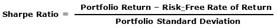

The Sharpe Ratio, developed by Bill Sharpe, the father of the Capital Asset Pricing Model (CAPM), which is widely used today in portfolio analytics, is a measure that defines the degree to which an investor is rewarded for taking risk in a portfolio. More specifically, the Sharpe Ratio is calculated as follows:

In other words, assuming that short-term Treasury Bills represent the “risk-free” rate, the numerator of the Sharpe Ratio asks the question: “How much return does this portfolio achieve above the return I can get without taking on risk?
Then, using the portfolio’s standard deviation as a measure of the risk in the portfolio, the ratio asks a second question: “What is the ratio of this extra return to the risk I took on with this portfolio?”
Obviously, when comparing portfolios, the greater the ratio of extra return to the risk (standard deviation) being taken on to generate that extra return, the better the portfolio’s risk-adjusted return.
This measure is extremely useful because it allows us to compare the returns of different portfolios on a risk-adjusted basis, allowing us to compare apples-to-apples when comparing their performance.